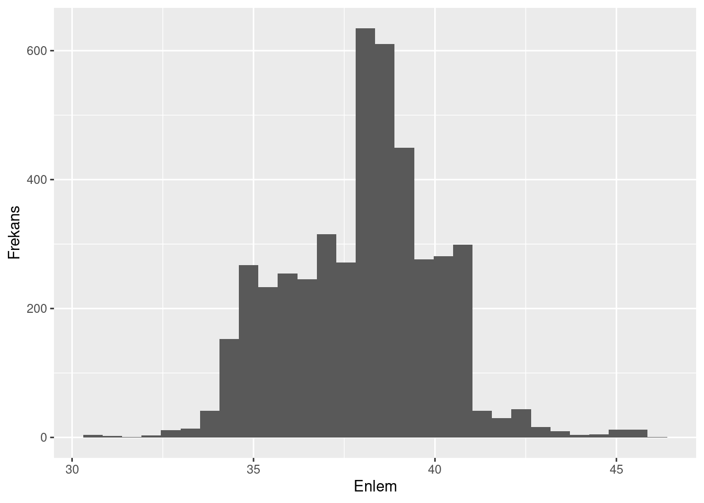
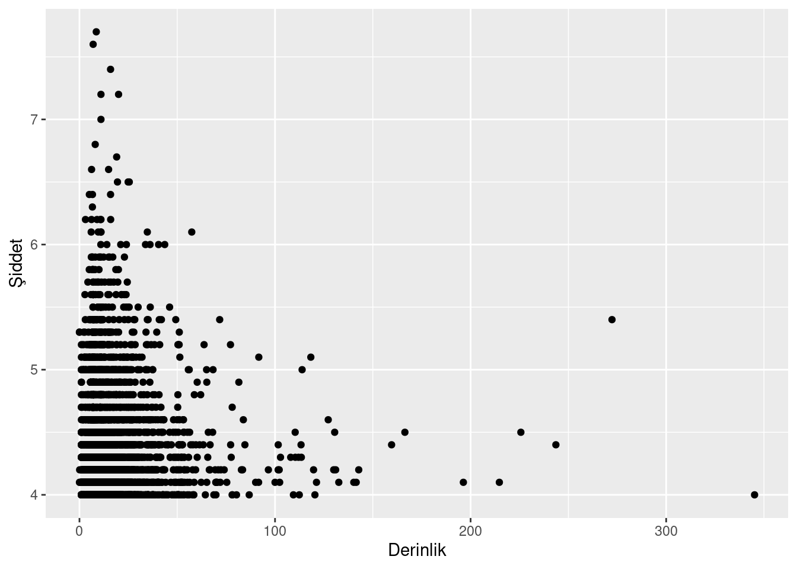

Geçtiğimiz haftanın nasıl geçtiğini anlayamadım. Son bir aydır, Avrupa Birliği tarafından desteklenen NEOMATRIX projesi kapsamında bir çalıştay hazırlığı içerisindeydik. Bu kapsamda, Stokholm, Paris ve Ankara’dan hocalar gelecek ve üzerinde çalıştığımız bir antik metagenomik analiz protokolü hakkında bir çalıştay gerçekleştirecektik.
Pazar akşamı ekip gelmiş, hazırlıklar olabildiğinde tamamlanmış ve artık çalıştay aşamasına geçmeye yaklaşmıştık. Ancak, Pazartesi sabaha karşı depremle uyandık…
Olayın bu kısmına çok fazla giremeyeceğim ancak sonuç olarak çalıştay ve bütün toplantılar iptal oldu. Yurtdışından gelen hocaları ise Ankara üzerinden ülkelerine ulaşmalarını sağladık. Hepimize geçmiş olsun.
Ben de bir yandan ailemle ilgilenmek için telefon trafiği içerisindeyken, aklımın bir köşesinde “Acaba ülkemizde gerçekleşen depremleri inceleyebilir miyiz?” sorusu dönüyordu.
Tabii ki bir deprem bilimci ya da jeolog değilim. Bu konuda asla ahkam kesemem, ancak hali hazırda açık bir şekilde paylaşılan veriyi kullanarak bazı denemeler yapmakta özgürüm. Bu yazıda aşağıdaki temel noktalara odaklanmaya çalışacağım:
- Ülkemizin deprem kuşağında olduğunu göstermek
- Kahramanmaraş - ve Doğu Anadolu - özelindeki depremlerin oluşma sırasını göstermek
- Bu bilgileri kullanarak eğitim materyali hazırlamak
Genel görünüm
Öncelikle 1990 yılından bu yana yaşanmış depremlerin verisini AFAD internet sitesinden indirdim. Görünüşe göre veri Türkiye’de bulunan istasyonlar tarafından hissedilmiş bütün deprem kayıtlarını içeriyor. Dolayısıyla veriyi bir miktar işlemeniz gerekebilir. Ancak öncelikle verinin şeklini inceleyelim.
Verimiz 402212 gözlem ve 10 değişkenden oluşuyor. Yani her satır bir deprem hareketini gösterirken, her sütün ise bu depremde gözlenen değişkenleri ifade ediyor.
Sütun isimlerine bakarsak:
[1] "Date" "Longitude" "Latitude" "Depth" "Rms" "Type"
[7] "Magnitude" "Location" "EventID" "index" - Date: Olayın tarihi
- Longitude: Boylam
- Latitude: Enlem
- Depth: Derinlik
- Rms: Algılanma süresi (saniye)
- Type: Ölçüm tipi
- Magnitude: Şiddet
- Location: Deprem bölgesi
- EventID: Depremin kodu
Bu bilgilere göre, ülkemiz istasyonları tarafından algılanan 402212 tane deprem olmuş. Bu depremlerin şiddetlerini bir histogram olarak incelersek daha açıklayıcı olacaktır (Figür 1).
Gördüğünüz gibi bu depremlerin büyük bir kısmı aslında düşük şiddete sahip. Sadece 37 tanesi 6’nın üzerinde gerçekleşmiş. Tabii bu veriye, ülkemize yakın noktalarda gerçekleşmiş depremler de dahil. Doğanın politik sınırları yok.
Peki bu depremler nerelerde odaklanmış? Enlem ve boylam bilgisinin histogramını oluşturursak bunu rahatlıkla gösterebiliriz. Figür 2’da gösterilen histogramlardaki tepe noktaları, aslında hangi enlem ve boylamlarda en fazla depremin oluştuğunu göstermektedir.

Peki depremlerin oluştuğu derinlik ve depremin şiddeti arasında bir bağlantı var mı? Bunu da bir nokta grafiği kullanarak gösterebiliriz (Figür 3). Bu şekle baktığımızda aslında depremlerin çoğunlukla yüzeye yakın bölgelerde oluştuğunu görebiliriz. Ayrıca, yüzeye yakın olan depremlerin de şiddetinin büyük olma ihtimali oldukça fazla.

Bu noktadan sonra veriyi sadeleştirmek için, 4’den küçük olan depremleri filtreledim. Filtrelenmiş veriyi artık Türkiye haritasına oturtabiliriz (Figür 4). Bu şekle baktığımızda aslında görmemiz gereken şey noktaların nerelerde yoğunlaştığı. Noktaların daha yoğun olduğu bögeler bize depremlerin de yoğun olarak oluştuğu yerleri göstermektedir.
Dikkat edersek, Kuzey Anadolu ve Doğu Anadolu fay hatları üzerinde yoğun bir deprem hareketliliği görülebilir.
Şimd haritayı biraz daha Türkiye üzerine odaklayalım ve depremlerin de büyüklüklerini ekleyelim. Bu sayede büyük depremlerin nerelerde olduğunu görebiliriz (Figür 5). Bu şekilde, kırmızı noktaların yoğunluğu arttıkça, o bölgede güçlü bir deprem olduğu anlaşılmaktadır.
Bu şekil bence Türkiye’nin gerçekten bir deprem bölgesi olduğu gerçeğini çok güzel bir şekide anlatıyor. Depremler Batı ve Doğu bölgelerimizde yoğunlaşmış durumda. Orta Anadolu’dan başlayarak, Akdeniz’in ortasına kadar inen bölgede ise fazla deprem görünmüyor.
Kahramanmaraş depremi ve Doğu Anadolu fay hattı
Ancak benim ilgilendiğim nokta şu an için Kahramanmaraş depremi. Şimdi biraz daha bu bölgeye odaklalanalım. Acaba fay hattı hangi yönlere doğru kırılmış olabilir? Küçük bir animasyonla bunu görselleştirebilriz. Eğer Figür 6’e bakacak olursanız fay hattının nasıl bir şekilde kırıldığını daha rahat bir şekilde anlayabiliriz.
Doğu Anadolu fayının kırılması
Fay hatlarının doğudan batıya doğru kırıldığını haberlerden duymuşsunuzdur mutlaka. Acaba bu bilgiyi, elimizdeki veriyi kullanarak görselleştirebilir miyiz? Bunun Van depreminden önceki (09 Kasım 2011) depremleri filtrelememiz ve incelememizi sadece Doğu bölgesine sınırlamamız gerekidir (Figür 7).

Sonuç
Sonuç olarak amacımıza ulaştık.